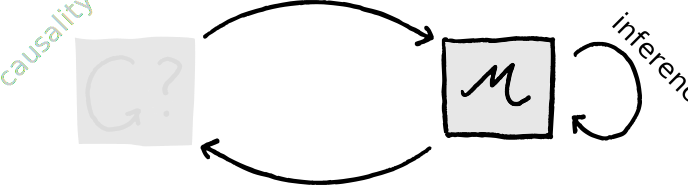

The scientific epistemology of Robert Rosen
“No one likes to come down from the top of a tall building, from where visas and panoramas are visible, and inspect a window-less basement. We know, intellectually, that there could be no panoramas without the basement, but emotionally, we feel no desire to look at it directly; indeed we feel an aversion. Above all, there is no beauty; there are only dark corners and dampness and airlessness. It is sufficient to know that the building stands on it, that its supports, its pipes, and plumbing are in place and functioning.”
A rather typical Rosennian passage, with a tinge of psychoanalysis of the scientist, an explicit allusion to aesthetic qualities of science. I am unsure whether he is honest about the ‘No one’ (understanding ‘We’ to refer, roughly, to ‘We scientists’, conceived rather broadly) or whether he is being ironic – perhaps even slightly sardonic.
At any rate, Robert Rosen puts epistemological issues rightly at the heart of science, and has some ideas there that I find highly appealing.1 These ideas revolve around two concepts: (1) Natural Law and (2) Modeling Relations.

For one thing, I find the complete lack of any sort of bullet-point list about some sacred ‘scientific method’ (usually ‘The Scientific Method’) a relief.↩︎